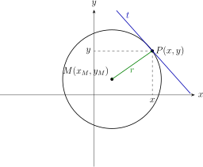
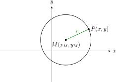
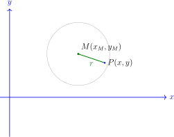
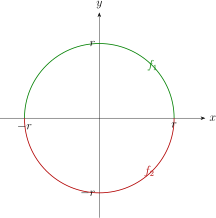
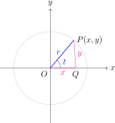
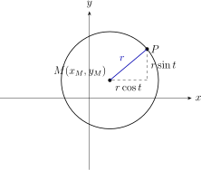

Hoofdstuk 2De cirkel

Leerplandoelstellingen (GO! Navigator)
Gevorderde wiskunde (WD3_06.08)
-
• WD3_06.08.11.02 De leerlingen formuleren cirkel, ellips, parabool, hyperbool als meetkundige plaats.
-
• WD3_06.08.11.03 De leerlingen formuleren de standaardvergelijkingen van cirkel, ellips, parabool, hyperbool.
Aanvullend voor het onderdeel functioneel verloop van de halve cirkels
-
• WD3_06.08.21 (MD 06.08.07) De leerlingen leggen het verband tussen de grafiek en het voorschrift van een functie en haar kenmerken.
-
– afbakening: veeltermfuncties, rationale functies, (elementaire) irrationale functies, exponentiële functies, logaritmische functies \(f(x)=\log _a(x)\), goniometrische functies \(f(x)=\cos x\) en \(f(x)=\tan x\), cyclometrische functies, absolute waardenfunctie, meervoudig functievoorschrift
-
– afbakening: domein, bereik, nulwaarden, tekenverloop, stijgen/dalen/constant, extrema, constante/toenemende/afnemende stijging/daling, symmetrie, periode, amplitude, asymptotisch gedrag, gedrag op oneindig
-
-
• WD3_06.08.28.01 (MD 06.08.17) De leerlingen berekenen de afgeleide functie van functies die zijn opgebouwd uit veeltermfuncties, rationale functies, irrationale functies, exponentiële functies, logaritmische functies en goniometrische functies.
-
• WD3_06.08.29 (MD 06.08.18) De leerlingen analyseren het verloop van functies met behulp van de eerste en tweede afgeleide functie en lossen extremumproblemen op.
-
– afbakening: stelling van Rolle, middelwaardestelling van Lagrange
-
Didactische uitwerking: de cirkel als meetkundige plaats, standaardvergelijking en algemene vorm, middelpunt en straal bepalen, raaklijnen, afstanden in het vlak, functioneel verloop van de bovenste en onderste halve cirkel, en parametervoorstelling van een cirkel.
I Definitie van een cirkel
1 Definitie
Een cirkel is de verzameling van alle punten in het vlak die op een vaste afstand liggen van een vast punt.
-
• Het vaste punt noemen we het middelpunt.
-
• De vaste afstand noemen we de straal.
Als het middelpunt \(M\) is en de straal \(r\), dan noteren we:
\[ \mathcal {C}(M,r)=\{\,P \in \pi _0 \mid d(P,M)=r\,\} \]
2 Figuur

Een punt behoort tot de cirkel als en slechts als zijn afstand tot het middelpunt gelijk is aan de straal.
II Cartesische vergelijking
1 Opstelling formule
We kiezen een orthonormaal assenstelsel:

| geg.: | middelpunt \(M(x_M,y_M)\) |
| straal \(r\) | |
| gev.: | vergelijking van \(\mathcal {C}(M,r)\) |
\begin{align*} P(x,y) &\in \mathcal {C}(M,r) \\ &\Leftrightarrow d(P,M)=r \\ &\Leftrightarrow \sqrt {(x-x_M)^2+(y-y_M)^2}=r && \text {\shortstack [l]{BV: OK\\KV: $r\ge 0$, want afstand}} \\ &\Leftrightarrow \boxed {(x-x_M)^2+(y-y_M)^2=r^2} && \leftrightarrow \mathcal {C}(M,r) \end{align*}
2 Bijzonder geval
\[ M = O(0,0) \Rightarrow \boxed {\mathcal {C}(O,r) \leftrightarrow x^2+y^2=r^2} \]
3 Voorbeeld
Gegeven:
\[ M(-2,1),\qquad r=3 \]
\[ (x+2)^2+(y-1)^2=9 \]
Oefening 1
Stel telkens de vergelijking op van de cirkel met middelpunt \(M\) en straal \(r\) als:
-
(a) \(M(2,3)\), \(r = 5\)
\(\seteqnumber{0}{}{0}\)\begin{align*} && (x-2)^2+(y-3)^2 &= 5^2 &&\\ &\Leftrightarrow & (x-2)^2+(y-3)^2 &= 25 && \end{align*}
-
(b) \(M(-1,4)\), \(r = 4\)
\(\seteqnumber{0}{}{0}\)\begin{align*} && (x-(-1))^2+(y-4)^2 &= 4^2 &&\\ &\Leftrightarrow & (x+1)^2+(y-4)^2 &= 16 && \end{align*}
-
(c) \(M(-3,-5)\), \(r = 2\)
\(\seteqnumber{0}{}{0}\)\begin{align*} && (x-(-3))^2+(y-(-5))^2 &= 2^2 &&\\ &\Leftrightarrow & (x+3)^2+(y+5)^2 &= 4 && \end{align*}
-
(d) \(M(0,-1)\), \(r = \sqrt {3}\)
\(\seteqnumber{0}{}{0}\)\begin{align*} && (x-0)^2+(y-(-1))^2 &= (\sqrt {3})^2 &&\\ &\Leftrightarrow & x^2+(y+1)^2 &= 3 && \end{align*}
Oefening 2
Geef de vergelijking van de cirkel met middelpunt \(M(-2,4)\) en straal \(3\).
\begin{align*} && (x-a)^2+(y-b)^2 &= r^2 &&\\ &\Leftrightarrow & (x-(-2))^2+(y-4)^2 &= 3^2 &&\\ &\Leftrightarrow & \Aboxed {(x+2)^2+(y-4)^2 = 9} && \end{align*}
Oefening 3
Stel de vergelijking op van de cirkel met middelpunt \(M(2,5)\) die door de oorsprong gaat.
\begin{align*} && r^2 &= (0-2)^2+(0-5)^2 &&\\ &\Leftrightarrow & r^2 &= 4+25 &&\\ &\Leftrightarrow & r^2 &= 29 && \end{align*}
\(\seteqnumber{0}{}{0}\)\begin{align*} && (x-a)^2+(y-b)^2 &= r^2 &&\\ &\Leftrightarrow & (x-2)^2+(y-5)^2 &= 29 &&\\ &\Leftrightarrow & \Aboxed {(x-2)^2+(y-5)^2 = 29} && \end{align*}
III Algemene gedaante
1 Van standaardvorm naar algemene vorm
\(\seteqnumber{0}{}{0}\)\begin{align*} & & (x-x_M)^2 + (y-y_M)^2 &= r^2\\ & \Leftrightarrow & x^2 - 2x_Mx + x_M^2 + y^2 - 2y_My + y_M^2 &= r^2\\ & \Leftrightarrow & x^2 + y^2 + \underbrace {(-2x_M)}_{=\,2a}x + \underbrace {(-2y_M)}_{=\,2b}y + \underbrace {x_M^2 + y_M^2 - r^2}_{=\,c} &= 0 \end{align*}
\[ \boxed {x^2 + y^2 + 2ax + 2by + c = 0} \]
2 Omgekeerde werkwijze
\(\seteqnumber{0}{}{0}\)\begin{align*} & & x^2 + y^2 + 2ax + 2by + c & = 0 \\ & \Leftrightarrow & x^2 + 2ax + y^2 + 2by & = -c \\ & \Leftrightarrow & x^2 + 2ax + a^2 + y^2 + 2by + b^2 & = -c + a^2 + b^2 \\ & \Leftrightarrow & (x+a)^2 + (y+b)^2 & = \underbrace {a^2 + b^2 - c}_{=\,r^2} \end{align*}
\[ \begin {array}{c@{\qquad }c} \boxed {M(-a,-b)} & \boxed {r=\sqrt {a^2+b^2-c}} \end {array} \qquad \text {met } a^2+b^2>c \]
3 Voorbeeld
Geef \(M\) en \(r\) van de cirkel met vgl.
\[ x^2+y^2-4x-16y+43=0 \]
1\(^\text {e}\) manier: met formules
\[ \left \{ \begin {aligned} 2a&=-4 &&\Rightarrow a=-2\\ 2b&=-16 &&\Rightarrow b=-8\\ c&=43 \end {aligned} \right . \]
\[ \qquad \Rightarrow \qquad M(-a,-b)=(2,8) \text { en } r=\sqrt {a^2+b^2-c}=\sqrt {4+64-43}=5 \]
2\(^\text {e}\) manier: berekenen met volledig kwadraat
\begin{align*} & & x^2-4x+y^2-16y & = -43 \\ & \Leftrightarrow & (x^2-4x+4)+(y^2-16y+64) & = -43+4+64 \\ & \Leftrightarrow & (x-2)^2+(y-8)^2 & = 25 \end{align*}
\[ \boxed {M(2,8)\quad \text {en}\quad r=5} \]
Oefening 4
Bepaal middelpunt en straal van:
\[ x^2+y^2+8x-6y+9=0 \]
\begin{align*} && x^2+y^2+8x-6y+9 &= 0 &&\\ &\Leftrightarrow & x^2+8x+y^2-6y &= -9 &&\\ &\Leftrightarrow & x^2+8x+16+y^2-6y+9 &= -9+16+9 &&\\ &\Leftrightarrow & (x+4)^2+(y-3)^2 &= 16 &&\\ &\Leftrightarrow & \Aboxed {M(-4,3)\ \text {en}\ r=4} && \end{align*}
Oefening 5
Stel de vergelijking op in algemene vorm, van de cirkel met middelpunt \(M(2,5)\) die door de oorsprong gaat.
\begin{align*} && r^2 &= (0-2)^2+(0-5)^2 &&\\ &\Leftrightarrow & r^2 &= 4+25 &&\\ &\Leftrightarrow & r^2 &= 29 && \end{align*}
\(\seteqnumber{0}{}{0}\)\begin{align*} && (x-a)^2+(y-b)^2 &= r^2 &&\\ &\Leftrightarrow & (x-2)^2+(y-5)^2 &= 29 &&\\ &\Leftrightarrow & \Aboxed {(x-2)^2+(y-5)^2 = 29} && \text {(standaardvorm)} \end{align*}
\(\seteqnumber{0}{}{0}\)\begin{align*} && (x-1)^2+(y-1)^2 &= 74 &&\\ &\Leftrightarrow & x^2-2x+1+y^2-2y+1 &= 74 &&\\ &\Leftrightarrow & x^2+y^2-2x-2y-72 &= 0 &&\\ &\Leftrightarrow & \Aboxed {x^2+y^2-2x-2y-72=0} && \text {(algemene vorm)} \end{align*}
IV Raaklijn aan een cirkel
1 Eigenschap
De raaklijn aan een cirkel in een punt \(D\) staat loodrecht op de straal door dat punt.
\[ t \perp MD \]
2 Raaklijn aan \(\mathcal {C}(O,r)\) in een punt \(D(x_1,y_1)\)
Gegeven
\[ \mathcal {C}(O;r):\ x^2+y^2=r^2 \]
\[ D(x_1,y_1)\in \mathcal {C}(O;r) \]
Gevraagd
Vergelijking van de raaklijn \(t\) in \(D\) aan \(\mathcal {C}(O;r)\).
Oplossing
\[ 1)\; t \perp OD \qquad \qquad 2)\; D(x_1,y_1)\in t \]
\(\seteqnumber{0}{}{0}\)\begin{align*} & 1) & m_t &= -\frac {1}{m_{OD}} &&\\ && &= -\frac {1}{\frac {y_1-0}{x_1-0}} &&\\ && &= -\frac {x_1}{y_1}&& \end{align*}
\(\seteqnumber{0}{}{0}\)\begin{align*} & 2) & t:\ y-y_1 &= -\frac {x_1}{y_1}(x-x_1) \\ & \Leftrightarrow & y_1y-y_1^2 &= -x_1x+x_1^2 \\ & \Leftrightarrow & x_1x+y_1y &= \underbrace {x_1^2+y_1^2}_{r^2} && r^2 \text { want } D\in \mathcal {C}(O,r) \\ & \Leftrightarrow & x_1x+y_1y &= r^2 \end{align*}
\[ \boxed {t:\ x_1x+y_1y=r^2} \]
3 Voorbeeld
Gegeven \(\mathcal {C} \leftrightarrow x^2+y^2=25\), bepaal de raaklijn in \(D(4,3)\).
\[ \boxed {t:\ 4x+3y=25} \]
Oefening 6
Bepaal de raaklijn aan de cirkel
\[ x^2+y^2=13 \]
in het punt \(D(2,3)\).
\begin{align*} && 2^2+3^2 &= 13 &&\\ &\Leftrightarrow & 4+9 &= 13 &&\\ &\Leftrightarrow & 13 &= 13 && \end{align*}
Dus \(D(2,3)\) ligt op de cirkel.
\(\seteqnumber{0}{}{0}\)\begin{align*} && m_{OD} &= \frac {3-0}{2-0} = \frac {3}{2} &&\\ &\Leftrightarrow & m_{\text {raaklijn}} &= -\frac {2}{3} && \end{align*}
\(\seteqnumber{0}{}{0}\)\begin{align*} && y-3 &= -\frac {2}{3}(x-2) &&\\ &\Leftrightarrow & 3y-9 &= -2x+4 &&\\ &\Leftrightarrow & \Aboxed {2x+3y=13} && \end{align*}
Oefening 7
Bepaal de raaklijn in \(A\) aan \(\mathcal {C}\) als:
-
(a) \(\mathcal {C} \leftrightarrow x^2 + y^2 = 9\), \(A(1,\sqrt {8})\)
\(\seteqnumber{0}{}{0}\)\begin{align*} && 1^2+(\sqrt {8})^2 &= 9 &&\\ &\Leftrightarrow & 1+8 &= 9 &&\\ &\Leftrightarrow & 9 &= 9 && \Rightarrow A \in \mathcal {C} \end{align*}
\(\seteqnumber{0}{}{0}\)\begin{align*} && x_Ax+y_Ay &= r^2 &&\\ &\Leftrightarrow & 1x+\sqrt {8}\,y &= 9 &&\\ &\Leftrightarrow & \Aboxed {x+\sqrt {8}\,y=9} && \end{align*}
-
(b) \(\mathcal {C} \leftrightarrow x^2 + y^2 = 13\), \(A(-2,3)\)
\(\seteqnumber{0}{}{0}\)\begin{align*} && (-2)^2+3^2 &= 13 &&\\ &\Leftrightarrow & 4+9 &= 13 &&\\ &\Leftrightarrow & 13 &= 13 && \Rightarrow A \in \mathcal {C} \end{align*}
\(\seteqnumber{0}{}{0}\)\begin{align*} && x_Ax+y_Ay &= r^2 &&\\ &\Leftrightarrow & -2x+3y &= 13 &&\\ &\Leftrightarrow & \Aboxed {-2x+3y=13} && \end{align*}
-
(c) \(\mathcal {C} \leftrightarrow x^2 + y^2 = 8\), \(A(-2,-2)\)
\(\seteqnumber{0}{}{0}\)\begin{align*} && (-2)^2+(-2)^2 &= 8 &&\\ &\Leftrightarrow & 4+4 &= 8 &&\\ &\Leftrightarrow & 8 &= 8 && \Rightarrow A \in \mathcal {C} \end{align*}
\(\seteqnumber{0}{}{0}\)\begin{align*} && x_Ax+y_Ay &= r^2 &&\\ &\Leftrightarrow & -2x-2y &= 8 &&\\ &\Leftrightarrow & \Aboxed {x+y=-4} && \end{align*}
4 Algemene formule
Voor de cirkel
\[ (x-x_M)^2+(y-y_M)^2=r^2 \]
en een raakpunt
\[ D(x_1,y_1) \]
is de raaklijn:
\[ \boxed {(x_1-x_M)(x-x_M)+(y_1-y_M)(y-y_M)=r^2} \]
Deze formule zegt in feite opnieuw dat de normaalvector van de raaklijn de richting van de straal \(MD\) heeft.
V Functioneel verloop van de cirkel
1 Een cirkel is geen functie
\[ \mathcal {C}(O;r) \leftrightarrow x^2+y^2=r^2 \]
Bij één \(x\)-waarde horen meestal twee \(y\)-waarden:
\[ y=\sqrt {r^2-x^2} \qquad \text {en} \qquad y=-\sqrt {r^2-x^2} \]
Daarom beschrijven we de cirkel met twee functies:
\[ f_1(x)=\sqrt {r^2-x^2} \qquad \text {en} \qquad f_2(x)=-\sqrt {r^2-x^2} \]
-
• \(f_1\) beschrijft de bovenste halve cirkel;
-
• \(f_2\) beschrijft de onderste halve cirkel.
2 Nulwaarden
\[ r^2-x^2=0 \qquad \Leftrightarrow \qquad x=-r \text { of } x=r \]
3 Tekenverloop
\[ \begin {array}{c|ccccc} \text {t.v.} & x & -r & & r & x \\ \hline r^2-x^2 & - & 0 & + & 0 & - \\ f_1(x)=\sqrt {r^2-x^2} & // & 0 & + & 0 & /// \end {array} \]
4 Domein
\[ \text {eis: } r^2-x^2 \ge 0 \qquad \Rightarrow \qquad \boxed {\dom f_1=[-r,r]} \]
5 Symmetrie
\[ f_1(-x)=f_1(x) \]
\(\Rightarrow \) \(f_1\) is even.
6 Continuı̈teit
\(f_1\) is een irrationale functie \(\Rightarrow \) cont. in \(\dom f_1=[-r,r]\).
7 Asymptoten
- VA:
-
geen! (geen noemers)
- HA:
-
\(\displaystyle \lim _{x\to \pm \infty } f_1(x)\) bestaat niet (zie \(\dom f_1\)) \(\Rightarrow \) geen!
- SA:
-
geen! (idem HA)
8 Stijgen & dalen
\(\seteqnumber{0}{}{0}\)\begin{align*} f_1'(x) & = \frac {1}{2}\cdot \frac {(r^2-x^2)'}{\sqrt {r^2-x^2}} \\ & = \frac {-2x}{2\sqrt {r^2-x^2}} \\ & = \frac {-x}{\sqrt {r^2-x^2}} \\ \Rightarrow & \text {nulw } Tf' \colon x=0 \\ & \text {nulw } Nf' \colon x=\pm r \end{align*}
\[ \begin {array}{c|c c c c c c c} \text {t.v.} & x & -r & & 0 & & r & x \\ \hline \text {Nf'} & & & & 0 & & & \\ \text {Tf'} & // & & + & 0 & - & & // \\ \hline f_1'(x) & // & & + & 0 & - & & // \\ \hline f_1 & // & 0 & \nearrow & \tvmax {r} & \searrow & 0 & /// \end {array} \]
\[ \boxed {\max =f_1(0)=r} \qquad \text {en}\qquad \left \{ \begin {array}{l} \text {stijgt op } ]-r,0[ \\ \text {daalt op } ]0,r[ \end {array} \right . \]
9 Hol & bol
\(\seteqnumber{0}{}{0}\)\begin{align*} f_1''(x) &= \left (\frac {-x}{\sqrt {r^2-x^2}}\right )' \\ &= \frac {-\sqrt {r^2-x^2}-(-x)\cdot \dfrac {-x}{\sqrt {r^2-x^2}}}{r^2-x^2} \\ &= \frac {-(r^2-x^2)-x^2}{(r^2-x^2)\sqrt {r^2-x^2}} \\ &= \frac {-r^2}{(r^2-x^2)\sqrt {r^2-x^2}} \\ \text {besluit: } & \text {nulw T}f'' \colon / \qquad \text {en} \qquad \text {nulw N}f'' \colon x=\pm r \end{align*}
\[ \begin {array}{c|ccccc} \text {t.v.} & x & -r & & r & x \\ \hline \text {T}f'' & & & + & & \\ \text {N}f'' & // & 0 & + & 0 & // \\ \hline f_1''(x) & // & & - & & // \\ \hline f_1 & // & 0 & \cap & 0 & /// \end {array} \]
En analoog voor \(f_2\) \(\Rightarrow \) onder de \(x\)-as (\(f_2=-f_1\)).
10 Grafiek

Oefening 8
-
(a) Stel de vergelijking op van de cirkel met middelpunt \(M(2,0)\) en straal \(2\).
-
(b) Splits de vergelijking van de cirkel in de vereniging van twee vergelijkingen van grafieken van functies.
-
(c) Bestudeer één van deze functies.
-
(d) Ga na dat de vergelijking van de raaklijn in een willekeurig punt \(D(x_1,y_1)\) van deze cirkel gegeven wordt door:
\(y_1 y + x_1 x - 2(x + x_1) = 4\)
VI Parametervoorstelling
1 M = O(0,0)

\[ c(O;r):\ x^2+y^2=r^2 \tag {1} \]
\(P(x,y)\in \text {cirkel}\)
\(t=\) hoek t.o.v. pos. \(x\)-as en \(\angle LOP\)
\[ \Rightarrow \ t\in [0;2\pi [ \]
Opstellen formule: \(\triangle OPQ\) is rechthoekig \(\Rightarrow \)
\[ \left \{ \begin {array}{l} x=r\cos t \\ y=r\sin t \end {array} \right . \qquad \text {met } t\in [0;2\pi [ \]
Controle: Voldoet dit aan \((1)\)?
\(\seteqnumber{0}{}{0}\)\begin{align*} x^2+y^2 &= r^2\cos ^2 t+r^2\sin ^2 t \\ &= r^2(\cos ^2 t+\sin ^2 t) \\ &= r^2\cdot 1 \\ &= r^2 \end{align*}
Stelsel parameter vergelijking (parvgl):
\[ \mathcal {C}(O,r) \leftrightarrow \boxed { \left \{ \begin {array}{l} x=r\cos t \\ y=r\sin t \end {array} \right . \qquad \text {met } t\in [0;2\pi [ } \]
2 Algemeen geval
Voor een cirkel met middelpunt
\[ M(x_M,y_M) \]
en straal \(r\) verschuift alles gewoon met \((x_M,y_M)\).
We krijgen:
\[ \boxed { \begin {cases} x=x_M+r\cos t\\ y=y_M+r\sin t \end {cases} \qquad \text {met } t\in [0,2\pi [ } \]
3 Figuur

VII Toepassingen
1 Van algemene vorm naar middelpunt en straal
Voorbeeld 1
Bepaal middelpunt en straal van:
\[ x^2+y^2+6x-4y+1=0 \]
\[ x^2+y^2+2ax+2by+c=0 \]
Dus:
\[ 2a=6 \Rightarrow a=3,\qquad 2b=-4 \Rightarrow b=-2,\qquad c=1 \]
Daaruit volgt:
\[ M(-a,-b)=(-3,2) \]
en
\[ r=\sqrt {a^2+b^2-c}=\sqrt {9+4-1}=\sqrt {12}=2\sqrt 3 \]
Dus:
\[ \boxed {M(-3,2)\qquad r=2\sqrt 3} \]
Voorbeeld 2
Bepaal de vergelijking van de cirkel met middelpunt
\[ M(1,-2) \]
die door het punt
\[ A(5,2) \]
gaat.
\[ r=d(M,A)=\sqrt {(5-1)^2+(2+2)^2}=\sqrt {16+16}=4\sqrt 2 \]
Dus:
\[ r^2=32 \]
en de vergelijking wordt:
\[ \boxed {(x-1)^2+(y+2)^2=32} \]
2 Raaklijn via afstand van punt tot rechte
Een rechte \(a\) is raaklijn aan een cirkel \(\mathcal {C}(M,r)\) als en slechts als:
\[ d(M,a)=r \]
Dit criterium is vaak de snelste manier om te controleren of een rechte raaklijn is.
Voorbeeld
Beschouw de cirkel
\[ (x-1)^2+(y-3)^2=25 \]
met middelpunt \(M(1,3)\) en straal \(r=5\).
Onderzoek of de rechte
\[ a:\ -3x+4y+16=0 \]
een raaklijn is.
\[ d(M,a)=\frac {|-3\cdot 1+4\cdot 3+16|}{\sqrt {(-3)^2+4^2}} =\frac {25}{5}=5 \]
Dus:
\[ d(M,a)=r \]
en daarom is \(a\) een raaklijn.
Oefening 10
Een cirkel heeft vergelijking
\[ x^2+y^2-2x+4y-11=0 \]
-
(a) bepaal het middelpunt;
We brengen de vergelijking naar standaardvorm:
\(\seteqnumber{0}{}{0}\)\begin{align*} && x^2+y^2-2x+4y-11 &= 0 &&\\ &\Leftrightarrow & (x^2-2x)+(y^2+4y) &= 11 &&\\ &\Leftrightarrow & (x-1)^2-1+(y+2)^2-4 &= 11 &&\\ &\Leftrightarrow & (x-1)^2+(y+2)^2 &= 16 && \end{align*} Dus:
\[ \boxed {M(1,-2)} \]
-
(b) bepaal de straal;
Uit de standaardvorm volgt:
\(\seteqnumber{0}{}{0}\)\begin{align*} && (x-1)^2+(y+2)^2 &= 16 &&\\ &\Leftrightarrow & (x-1)^2+(y+2)^2 &= 4^2 && \end{align*} Dus:
\[ \boxed {r=4} \]
-
(c) onderzoek of de rechte \(x-2y+1=0\) een raaklijn is.
We vergelijken de afstand van het middelpunt tot de rechte met de straal:
\(\seteqnumber{0}{}{0}\)\begin{align*} d(M,l) &= \frac {|1-2(-2)+1|}{\sqrt {1^2+(-2)^2}}\\ &= \frac {|1+4+1|}{\sqrt {5}}\\ &= \frac {6}{\sqrt {5}} \end{align*} Omdat
\(\seteqnumber{0}{}{0}\)\begin{align*} \frac {6}{\sqrt {5}} &\neq 4, \end{align*} is de rechte geen raaklijn.
\[ \boxed {\text {geen raaklijn}} \]
Oefening 11
Stel de vergelijking op van de cirkel met middelpunt \(M(-1,4)\) die de rechte \(a \leftrightarrow y = 2x - 3\) raakt.
De straal is de afstand van het middelpunt tot de raaklijn:
\(\seteqnumber{0}{}{0}\)\begin{align*} a &\leftrightarrow 2x-y-3=0\\[0.3em] r=d(M,a) &= \frac {|2\cdot (-1)-4-3|}{\sqrt {2^2+(-1)^2}}\\ &= \frac {|-2-4-3|}{\sqrt {5}}\\ &= \frac {9}{\sqrt {5}} \end{align*} De vergelijking van de cirkel is:
\(\seteqnumber{0}{}{0}\)\begin{align*} && (x-a)^2+(y-b)^2 &= r^2 &&\\ &\Leftrightarrow & (x-(-1))^2+(y-4)^2 &= \left (\frac {9}{\sqrt {5}}\right )^2 &&\\ &\Leftrightarrow & \Aboxed {(x+1)^2+(y-4)^2 &= \frac {81}{5}} && \end{align*}
Oefening 12
Zoek de vergelijking van de raaklijnen aan \(x^2 + y^2 - 2x - 2y - 8 = 0\) die evenwijdig zijn met de rechte \(-3x + y - 2 = 0\).
Tip:
Stel \(y = 3x + m\) en los volgend stelsel op:
\[ \begin {cases} y = 3x + m \\ x^2 + y^2 - 2x - 2y - 8 = 0 \end {cases} \]
Stel nadien de bekomen \(x\)-waarden aan elkaar gelijk en zoek \(m\).
Raaklijnen evenwijdig met de gegeven rechte hebben vorm \(y=3x+m\).
We substitueren in de cirkelvergelijking:
\(\seteqnumber{0}{}{0}\)\begin{align*} && x^2+(3x+m)^2-2x-2(3x+m)-8 &= 0 &&\\ &\Leftrightarrow & x^2+9x^2+6mx+m^2-2x-6x-2m-8 &= 0 &&\\ &\Leftrightarrow & 10x^2+(6m-8)x+m^2-2m-8 &= 0 && \end{align*}
Voor een raaklijn moet deze kwadratische vergelijking precies één oplossing hebben, dus \(D=0\):
\(\seteqnumber{0}{}{0}\)\begin{align*} && D &= 0 &&\\ &\Leftrightarrow & (6m-8)^2-4\cdot 10\cdot (m^2-2m-8) &= 0 &&\\ &\Leftrightarrow & 36m^2-96m+64-40m^2+80m+320 &= 0 &&\\ &\Leftrightarrow & -4m^2-16m+384 &= 0 &&\\ &\Leftrightarrow & m^2+4m-96 &= 0 &&\\ &\Leftrightarrow & (m+12)(m-8) &= 0 &&\\ &\Leftrightarrow & m=-12 \quad \text {of} \quad m=8 && \end{align*}
Dus de raaklijnen zijn:
\[ \boxed {y=3x-12 \quad \text {en} \quad y=3x+8} \]
3 Omgeschreven cirkel van een driehoek
Methode De omgeschreven cirkel van een driehoek gaat door de drie hoekpunten. Het middelpunt is het snijpunt van twee middelloodlijnen van de zijden.
Voorbeeld
Bepaal de omgeschreven cirkel van de driehoek met hoekpunten
\[ A(5,6),\qquad B(-2,-1),\qquad C(5,0) \]
Midden van \([AB]\):
\[ \left (\frac {5+(-2)}{2},\frac {6+(-1)}{2}\right )=\left (\frac 32,\frac 52\right ) \]
Richtingscoëfficiënt van \(AB\):
\[ m_{AB}=\frac {-1-6}{-2-5}=1 \]
Dus de middelloodlijn heeft rico \(-1\):
\[ y-\frac 52=-1\left (x-\frac 32\right ) \]
of:
\[ x+y-4=0 \]
2. Middelloodlijn van \([BC]\)
Midden van \([BC]\):
\[ \left (\frac {-2+5}{2},\frac {-1+0}{2}\right )=\left (\frac 32,-\frac 12\right ) \]
Richtingscoëfficiënt van \(BC\):
\[ m_{BC}=\frac {0-(-1)}{5-(-2)}=\frac 17 \]
Dus de middelloodlijn heeft rico \(-7\):
\[ y+\frac 12=-7\left (x-\frac 32\right ) \]
of:
\[ 7x+y-10=0 \]
3. Snijpunt van beide middelloodlijnen
We lossen op:
\[ \begin {cases} x+y-4=0\\ 7x+y-10=0 \end {cases} \]
Aftrekken geeft:
\[ 6x=6 \Rightarrow x=1 \]
en dan:
\[ y=3 \]
Dus:
\[ M(1,3) \]
4. Straal
\[ r=d(M,A)=\sqrt {(5-1)^2+(6-3)^2}=\sqrt {16+9}=5 \]
Besluit
De gezochte cirkel is:
\[ \boxed {(x-1)^2+(y-3)^2=25} \]
Oefening 13
Bepaal de vergelijking van de omgeschreven cirkel van de driehoek met hoekpunten
\[ A(2,-1),\qquad B(4,2),\qquad C(-1,0) \]
De middelloodlijn van \([AB]\):
\(\seteqnumber{0}{}{0}\)\begin{align*} M_{AB} &= \left (3,\frac 12\right ), \qquad m_{AB}=\frac {3}{2}\\ m_{\perp AB} &= -\frac {2}{3}\\ && y-\frac 12 &= -\frac 23(x-3) &&\\ &\Leftrightarrow & 3y-\frac 32 &= -2x+6 &&\\ &\Leftrightarrow & 4x+6y-15 &= 0 && \end{align*}
De middelloodlijn van \([AC]\):
\(\seteqnumber{0}{}{0}\)\begin{align*} M_{AC} &= \left (\frac 12,-\frac 12\right ), \qquad m_{AC}=-\frac {1}{3}\\ m_{\perp AC} &= 3\\ && y+\frac 12 &= 3\left (x-\frac 12\right ) &&\\ &\Leftrightarrow & y+\frac 12 &= 3x-\frac 32 &&\\ &\Leftrightarrow & y &= 3x-2 && \end{align*}
Het snijpunt is het middelpunt \(M\):
\(\seteqnumber{0}{}{0}\)\begin{align*} && \begin{cases} 4x+6y-15=0\\ y=3x-2 \end {cases} &&\\ &\Leftrightarrow & 4x+6(3x-2)-15 &= 0 &&\\ &\Leftrightarrow & 22x-27 &= 0 &&\\ &\Leftrightarrow & x &= \frac {27}{22} && \end{align*}
\(\seteqnumber{0}{}{0}\)\begin{align*} y &= 3\cdot \frac {27}{22}-2\\ &= \frac {81}{22}-\frac {44}{22}\\ &= \frac {37}{22} \end{align*}
Dus \(M\left (\frac {27}{22},\frac {37}{22}\right )\).
De straal bepalen we met punt \(A\):
\(\seteqnumber{0}{}{0}\)\begin{align*} r^2 &= \left (2-\frac {27}{22}\right )^2+\left (-1-\frac {37}{22}\right )^2\\ &= \left (\frac {17}{22}\right )^2+\left (-\frac {59}{22}\right )^2\\ &= \frac {289}{484}+\frac {3481}{484}\\ &= \frac {3770}{484}\\ &= \frac {1885}{242} \end{align*}
De vergelijking van de omgeschreven cirkel is:
\(\seteqnumber{0}{}{0}\)\begin{align*} \Aboxed { \left (x-\frac {27}{22}\right )^2+\left (y-\frac {37}{22}\right )^2 &= \frac {1885}{242} } \end{align*}
Oefening 14
Gegeven: \(A(5,6)\), \(B(-2,-1)\) en \(C(5,0)\)
-
(a) Stel de vergelijking op van de omgeschreven cirkel van \(\Delta ABC\).
-
(b) Bereken de afstand van het middelpunt van deze cirkel tot de rechte \(a \leftrightarrow -3x + 4y + 16 = 0\) en tot \(b \leftrightarrow 8x + 15y + 49 = 0\).
-
(c) Controleer m.b.v. ICT.